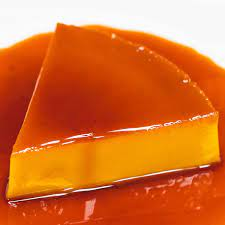

Description:
Leche Flan is a classic Filipino dessert known for its silky and creamy texture. It's often referred to as caramel custard and is made from a sweet, rich, and slightly caramelized egg custard. The dessert is baked until it's set, and when served, it's topped with a luscious caramel sauce that adds a delightful sweetness. Leche Flan is a favorite at gatherings and special occasions in the Philippines.
Recipe for Leche Flan:
Ingredients:
- 10 egg yolks
- 1 can (14 ounces) condensed milk
- 1 can (12 ounces) evaporated milk
- 1 cup sugar (for the caramel)
- 1/2 teaspoon vanilla extract (optional)
Instructions:
- Prepare the caramel: In a saucepan, melt the sugar over low heat until it turns into caramel. Pour the caramel into your leche flan mold or individual ramekins and spread it evenly on the bottom.
- In a mixing bowl, combine the egg yolks, condensed milk, and evaporated milk. Add the vanilla extract if desired and mix until well combined.
- Strain the egg mixture into the leche flan mold or ramekins to remove any lumps.
- Cover the mold or ramekins with aluminum foil and steam for about 30-40 minutes or until the flan is set.
- Let the leche flan cool and refrigerate for a few hours or overnight.
- To serve, invert the leche flan onto a plate, allowing the caramel to flow over the custard.
- Enjoy your homemade Leche Flan, a velvety dessert with a sweet caramel twist!
Indulge in the creamy goodness of Leche Flan, a beloved Filipino dessert!